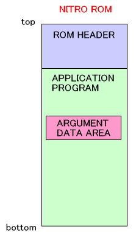
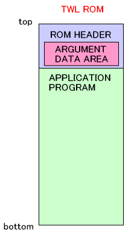
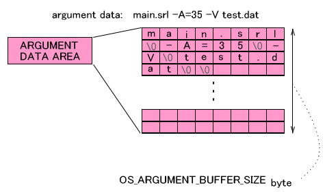

The TWL-SDK has a mechanism that passes arguments to an SRL file, which the program then gets to determine its behavior. This is effective for debugging and automated testing because it allows you to change the arguments and run the same ROM without having to recompile. However, this mechanism was intended to be used only during development, so it cannot be used with FINALROM builds.
This cannot be used by a hybrid ROM running in NITRO mode.
The area that stores the argument data differs between NITRO ROMs and TWL ROMs.
With NITRO ROMs, it will be stored in the application's variable region. This region is in the .version section of the ARM9.
With TWL ROMs, it will be stored in the ROM header region.

The argument data region stores the argument data along with the program name. For example, if the arguments -A=35 -V test.dat are passed to an SRL file called main.srl, they will be stored as follows.

The argument data region is of size OS_ARGUMENT_BUFFER_SIZE bytes. This value is defined as 256 for both NITRO and TWL.
The buryarg and buryarg.TWL tools are provided to use for configuring argument data for an SRL file.
NITRO ROMs and TWL ROMs each use a different tool. Make sure to use buryarg for NITRO ROMs and buryarg.TWL for TWL ROMs.
Instead of specifying an SRL file to one of these tools, you can also specify an NLF file for a NITRO ROM or a TLF file for a TWL ROM. If you do, it will analyze the NLF or TLF file and overwrite the file that constructs the ROM. In this case, the "program name" that is written in the argument data region will be the name of the overwritten file.
If you embedded argument data for use with SRL files, that argument data will not be applied to programs started from an NLF or TLF file. The converse is also true: if you embedded argument data for use with NLF or TLF files, that argument data will not be applied to programs started from an SRL file. This means that you should always start programs from the type of file intended to use the embedded data.
Argument data that is embedded in an SRL file can be loaded by a program using the OS_GetArgc and OS_GetArgv functions. These functions' specifications are compliant with the C standard functions argc and argv, and in the example above (the example in which the arguments -A=35 -V test.dat are passed to main.srl), the value of OS_GetArgc is 3. Additionally, OS_GetArgv(0) is "main.srl," OS_GetArgv(1) is "-A=35," OS_GetArgv(2) is "-V," and OS_GetArgv(3) is "test.dat."
The OS_GetOpt function has been provided to handle arguments as option strings.
The OS_GetArgumentBuffer and OS_SetArgumentBuffer functions have been provided to change the argument data region accessed by the OS_GetArgc and OS_GetArgv functions.
The OS_GetArgumentBuffer function gets the pointer to the current argument region. The OS_SetArgumentBuffer function sets a specified region as the argument data region.
The OS_ConvertToArguments function has been provided for writing a specified string to a buffer in argument data format.
The mechanism for passing these arguments was created for development purposes only, so it cannot be used with FINALROM builds of ROMs. Another reason for this decision is to avoid unforeseen bugs that could arise from leaving in a mechanism for passing parameters from outside the ROM. As a result, in FINALROM builds, OS_GetArgc always returns 0, and OS_GetArgv always returns NULL.
FINALROM builds of NITRO ROMs do not even include a region to store argument data. Accordingly, the buryarg tool cannot be used with FINALROM builds of NITRO ROMs. In contrast, the buryarg.TWL tool can be used even for FINALROM builds of TWL ROMs because for TWL ROMs the argument data is always located in a fixed region of the ROM header. However, as described earlier, the values that can be obtained are only 0 or NULL.
The nitrorun and nitrorun.TWL scripts have been provided for embedding arguments with buryarg or buryarg.TWL and running with loadrun or loadrun.TWL in one step.
OS Function List: Debug (Arguments)
2008/07/10 Initial version.
CONFIDENTIAL